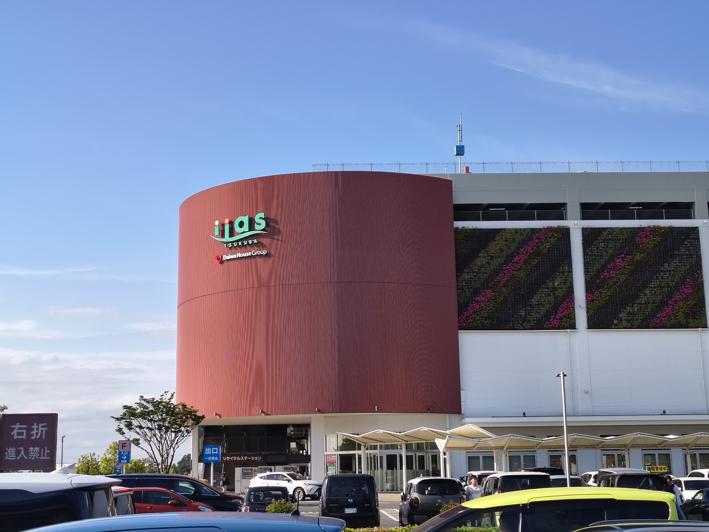

Shopping
A short page, this one. Here's a quick rundown of the shopping spots inside AIST and around Tsukuba that I've actually been to.
Convenience Stores
Floor numbering in Japan
The ground floor is listed as 1F, the floor above it is 2F, and so on. Worth keeping in mind when directions mention a floor number.
FamilyMart
Open 8 AM to 8 PM on weekdays, located in the Welfare Center on 2F, just above the cafeteria.
The fried chicken, Famichiki, is genuinely worth trying. There's a microwave you can use yourself here, unlike at 7-Eleven, where only staff handle it. Seating is available both inside the shop and on the open terrace across from it.
Lunch rush applies here too
Like the cafeterias, FamilyMart gets busy between 12 and 1 PM. Finding a seat usually isn't a problem, but the checkout line can get fairly long.
7-Eleven
Located directly opposite the South Gate, open 24 hours, with an ATM on site.
The ATM does more than cash
You can also use it to check your IC card balance or top it up.
No Japanese required at checkout
Every convenience store keeps a small pictogram card near the register, or pasted on the counter, showing yes/no options for a carry bag, chopsticks, and microwave heating. Just point at what you need. If you want something microwaved, ask at the counter and staff will heat it for you.
Coin exchangers and one yen coins
One yen coins are pretty much useless, since most vending machines won't accept them. Coin exchangers, found in most stations around Tokyo, let you convert them and top up your IC card instead.
Other Spots in Tsukuba
Higashi is a solid shopping cluster with Welcia, Kasumi food market, Matsumoto Kiyoshi, and a few other stores. If FamilyMart or 7-Eleven don't have what you need, this is the next place to check.

AEON Mall is probably one of the biggest malls in Tsukuba, and it's around 30 to 40 minutes away by bicycle.
Beyond that, Iias Tsukuba and the shopping complex next to Tsukuba Center (including a few shops selling handmade crafts) round out the bigger options nearby. Both are covered in more detail on the Travel page.
Tsukuba souvenir
If you're after a souvenir specifically tied to Tsukuba, there's a dedicated Tsukuba souvenir shop inside Tsukuba Center train station.